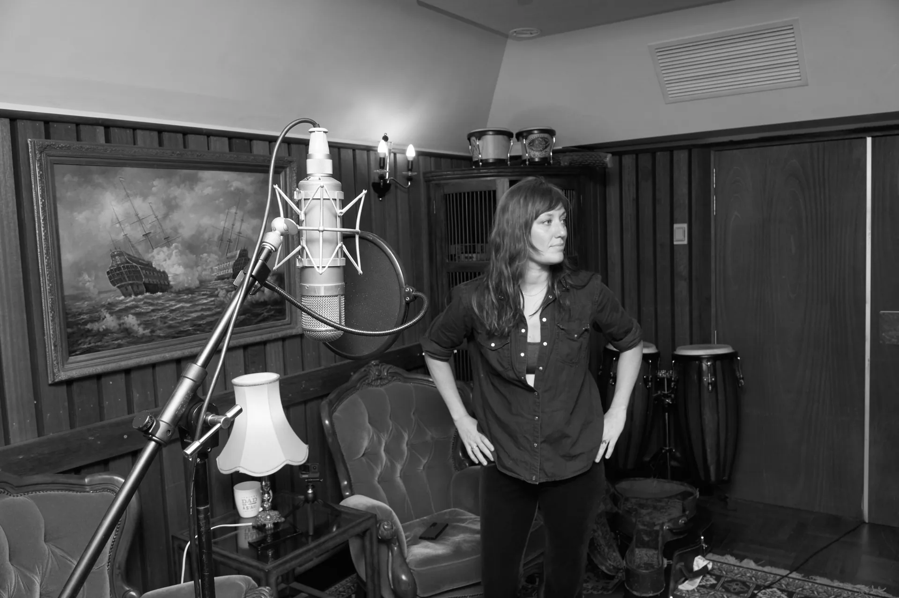
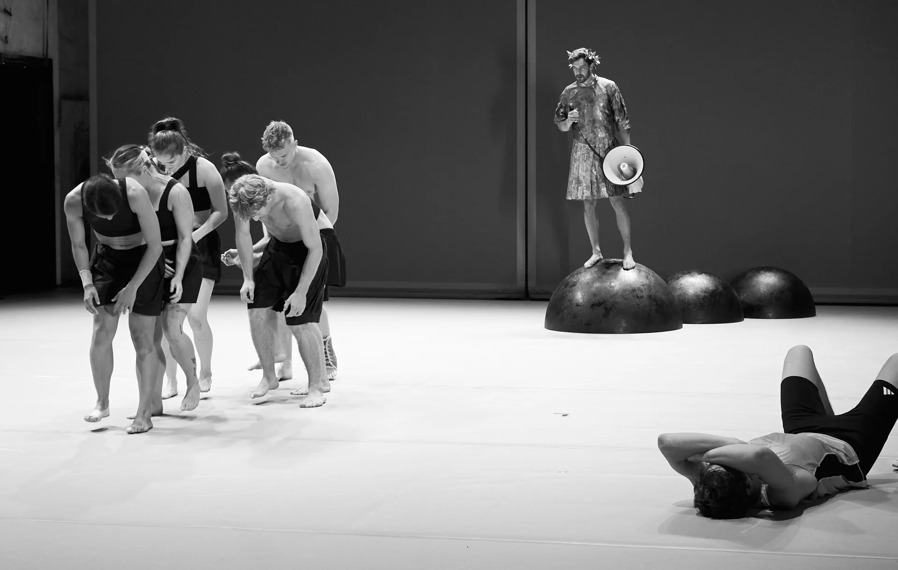
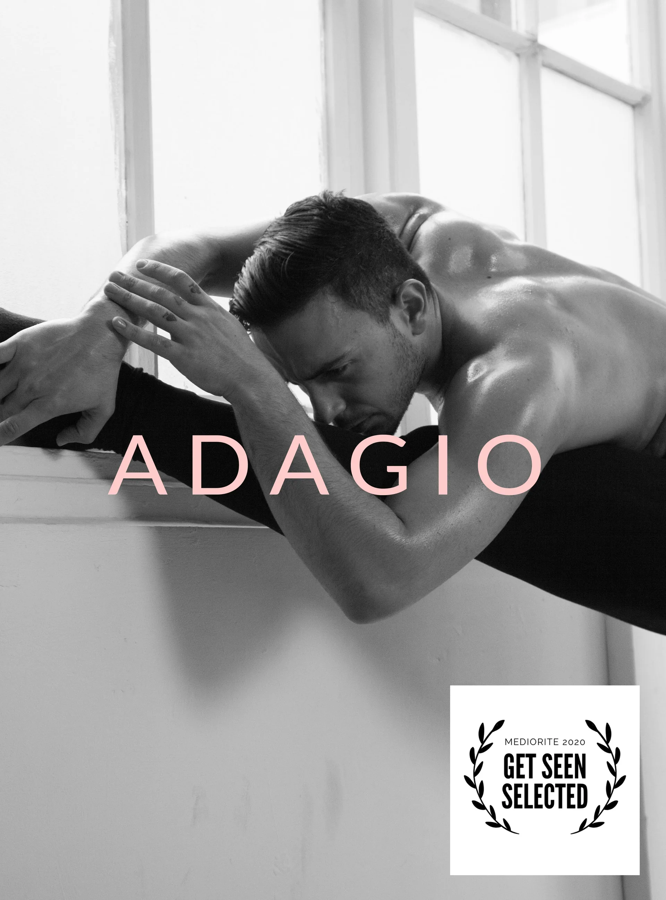
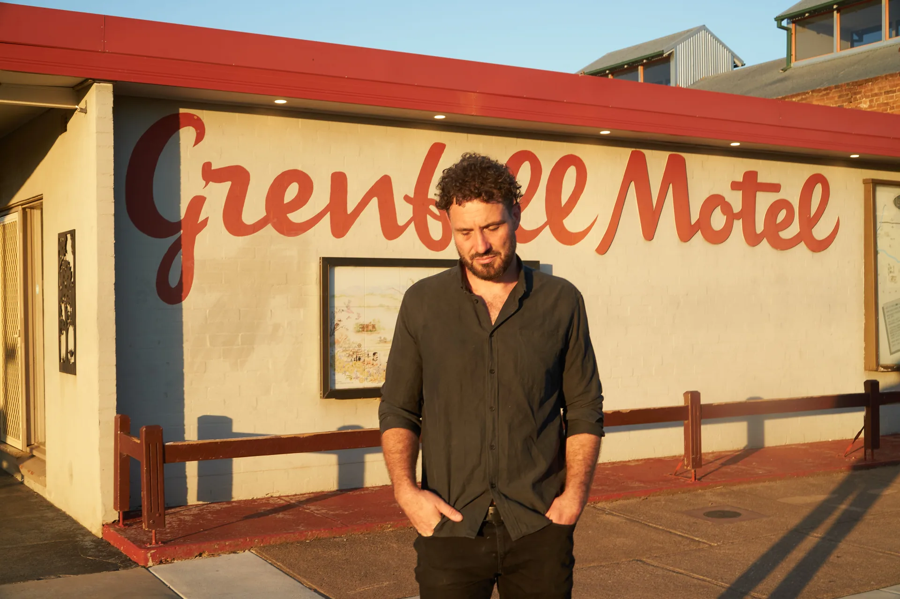
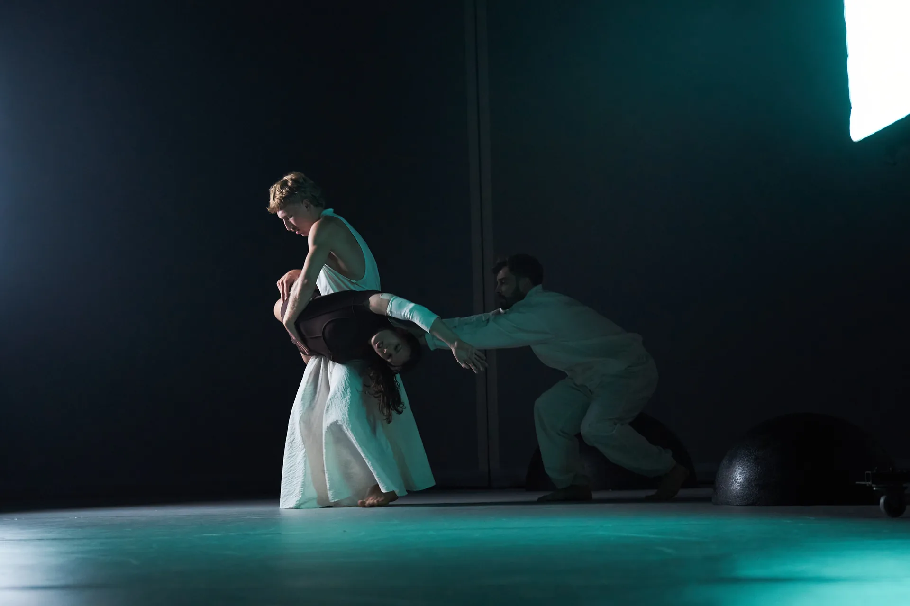
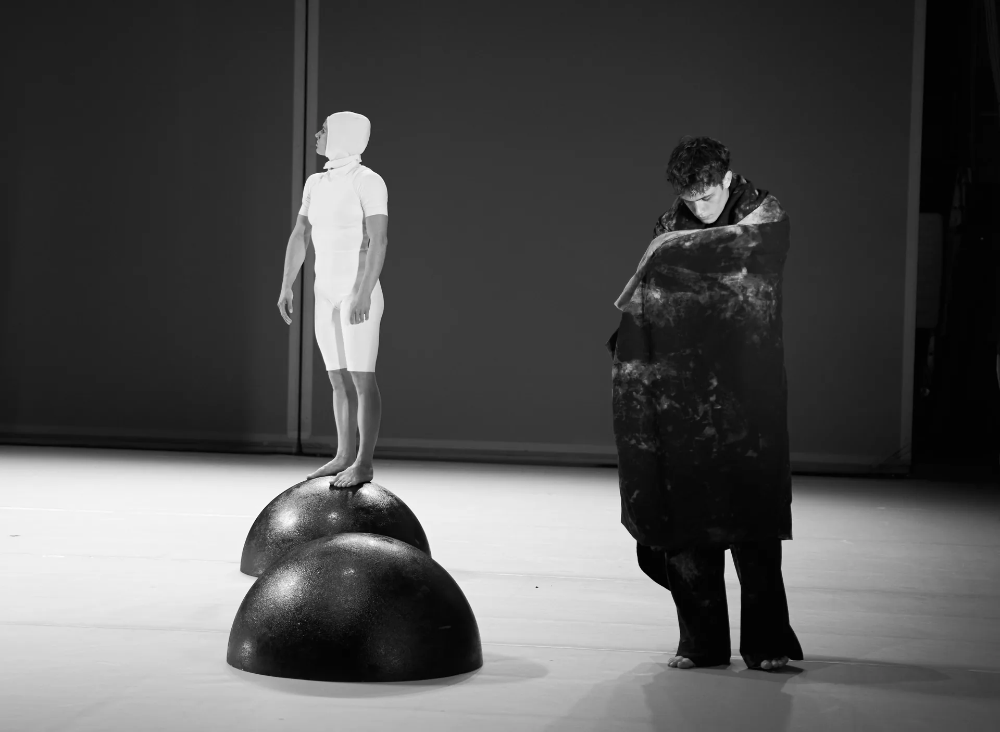
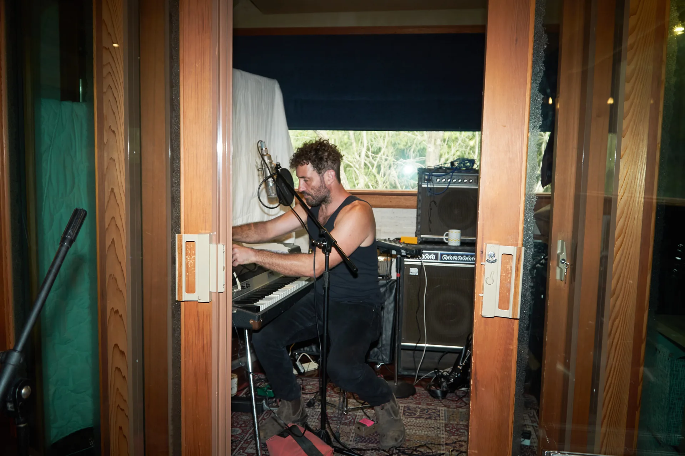
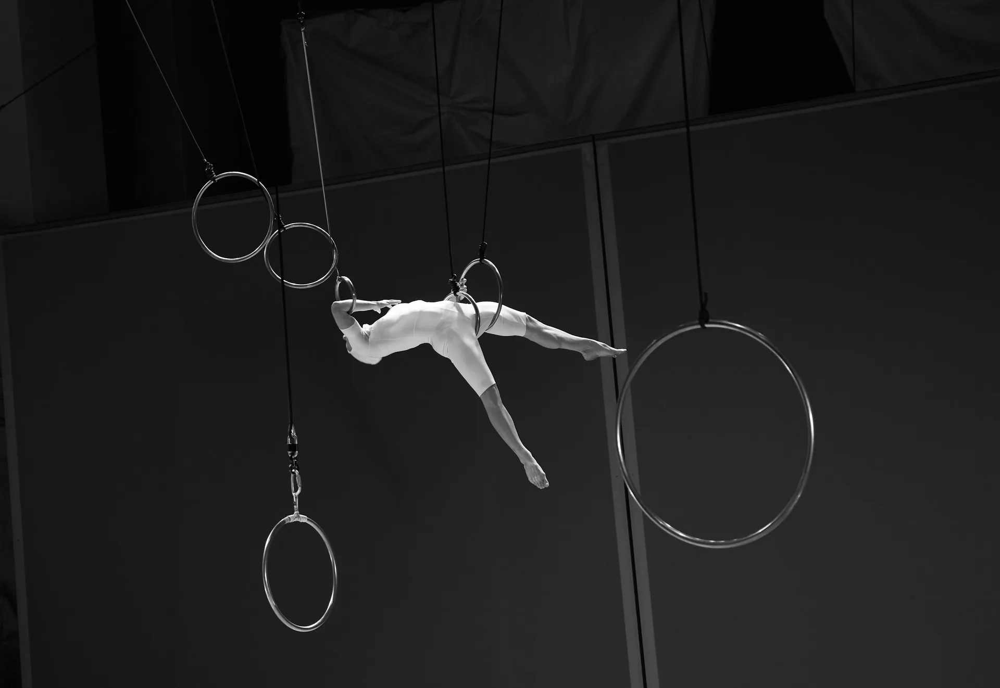
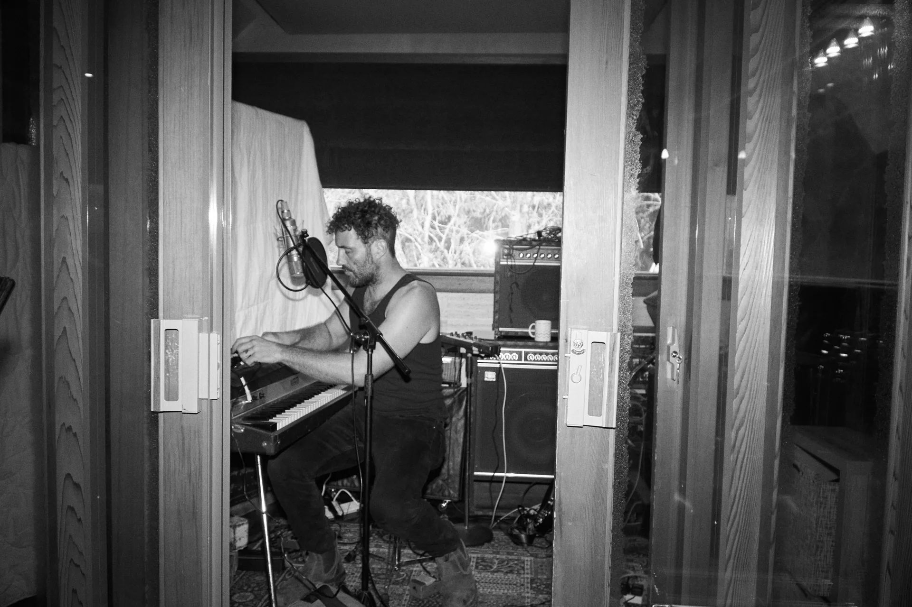

01
THEATRE
With Cirk La Putyka, I explored the space where theatre meets motion — translating live energy into visual stories that feel intimate, visceral, and alive. My work defined the company's digital identity and visual archive.








